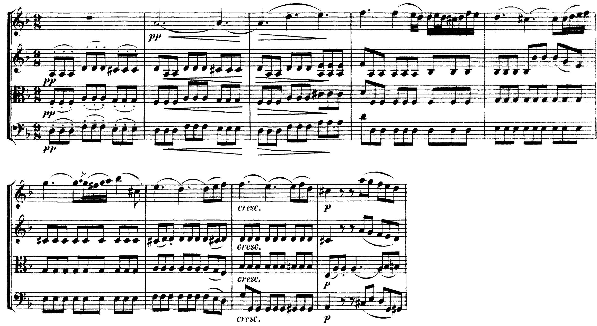

La settima diminuita nel tema, la napoletana e la sesta eccedente nelle due cadenze che chiudono le due parti, la napoletana di nuovo nella coda: gli alterati dell’Adagio stanno dove la musica va alla dominante.
La sesta tedesca della b. 33 suona come un V7/N, soprattutto perché è preceduta da una napoletana.
S. Kostka, Tonal Harmony, p. 377
A11Accordi di sesta aumentata, lezione 51, pp. 132–135; la cadenza con sesta napoletana, 3° anno, lezione 39, pp. 94–95.
Il secondo movimento del Quartetto op. 18 n. 1 è un Adagio in re minore, in 9/8, di centodieci battute. La prima battuta è solo accompagnamento: crome ribattute del violino II, della viola e del violoncello sulla tonica, sulla tonica in primo rivolto e sulla triade della sensibile; il tema entra alla b. 2 nel violino I, pp, su un la tenuto. Gli accordi alterati non sono sparsi nel movimento. Stanno in tre luoghi: nel tema, dove la settima diminuita prepara la semicadenza; nelle due cadenze che chiudono la prima parte in fa maggiore e la ripresa in re, dove la napoletana e la sesta eccedente precedono la dominante con la stessa formula; nella coda, dove la napoletana apre l’ultima salita del basso verso la dominante.
| Battute | Accordo | Dove |
|---|---|---|
| 5–6 | do♯–mi–sol–si♭ sul mi: vii°43 | nel tema, sopra il mi del basso |
| 8 | sol♯–si–re–fa: vii°7/V | prima della semicadenza della b. 9 |
| 33 e 37 | N6 (sol♭) – sesta italiana (re♭–fa–si♮) – V7 | la cadenza in fa maggiore, due volte |
| 83 e 87 | N6 (mi♭) – sesta italiana (si♭–re–sol♯) – V7 | la stessa cadenza in re, due volte |
| 102–105 | N6 – vii°65 del iv – iv6 – vii°7/V | la coda, sul basso sol–la–si♭–sol♯–la |

Scrivi le sigle sotto il basso, una per movimento.
Le due chiuse sono la stessa musica a una terza minore di distanza: le bb. 82–88 trasportano in re le bb. 32–38, scritte in fa. In entrambe il basso della battuta sale per terza e scende per semitono, 4°–6° abbassato–5° (si♭–re♭–do in fa, sol–si♭–la in re), e sopra quel basso si succedono la napoletana, la sesta italiana e il V7 con il ritardo 4–3 al violino I. Il secondo grado abbassato sta sempre al violino I e scende di semitono (sol♭–fa, mi♭–re); il quarto alzato sta sempre al violino II e scende cromaticamente, si♮–si♭ e sol♯–sol♮, a diventare la settima del V7; nell’ultima semicroma la viola aggiunge il 3° grado minore, la♭ in fa e fa in re, e la sesta italiana tocca la tedesca. Le differenze sono due. Il raddoppio della napoletana: in fa è raddoppiato il re♭, la quinta (viola e violino II), in re il sol, la terza (violoncello e viola), come nel libro. La tonica d’arrivo: in fa è maggiore perché la tonalità è maggiore e la napoletana vi entra per scambio modale; in re è maggiore anche se il movimento è in re minore, e la cadenza finisce con il fa♯. La formula è la stessa; il suo modo di arrivo no.
Chiamare sesta tedesca l’accordo di mezzo perché nell’ultima semicroma compare la terza della tonica: per cinque semicrome su sei l’accordo ha tre suoni, ed è una sesta italiana; la nota della viola è di passaggio verso il V7. Kostka, che cita la b. 33, la chiama tedesca (p. 377): le due letture vanno dichiarate, insieme alla durata della nota che le distingue.
Indica la battuta di ciascuno dei quattro accordi forti della coda e scrivine la sigla.
Alla b. 95 torna l’accompagnamento del tema, e dalla b. 99 il violoncello, nel registro acuto, ne canta la seconda frase (re–do♯, poi sol, come il violino I alle bb. 5–7), sotto il tremolo della viola e le figure in biscrome dei violini. Alla b. 102, f, il violoncello scende al sol e il quartetto attacca un accordo breve seguito da pause: sol–si♭–mi♭, la napoletana in primo rivolto, con il mi♭ al violino II e una volatina del violino I che sale dal mi♭ al si♭. Le bb. 103 e 104 ripetono il gesto due volte un grado sopra: sul la, la–do–mi♭–fa♯, la settima diminuita di sol in primo rivolto (vii°65 del iv); sul si♭, si♭–re–sol, il iv6. Alla b. 105, ff, il basso scende al sol♯ sotto si, re e il fa acuto del violino I: è la settima diminuita della dominante, che va al la e al do♯ del V e, alla b. 106, alla tonica. Il basso della coda è un altro modo di andare dal 4° al 5°: sol–la–si♭–sol♯–la, e la napoletana ne è il primo gradino. Le bb. 107–110 alternano dominante e tonica e chiudono pp.
La settima diminuita della sensibile e della dominante: le note alterate vengono dalle due sensibili.
N6 – sesta italiana – V7, in fa e in re: il 4° alzato scende e diventa la settima.
La napoletana apre la salita del basso dal 4° al 5°, e la settima diminuita della dominante la chiude.
La lezione si chiude con il solfeggio (parlato, cantato, ritmico) e con un basso di otto battute per casa, sulla formula delle due chiuse. L’unità 8 passa alle tre voci e all’imitazione, con il Benedictus della «Missa Ad fugam» di Palestrina.
Compiti per la prossima volta
Realizza il basso a quattro parti.
Sul quaderno, a matita. La foto del lavoro finito va su Classroom. Nel Workbook: apri l’esercizio 7.6 ↗
Compiti per la prossima volta
n. 434 e n. 435 parlato · n. 436 e n. 437 cantato · n. 438 e n. 439 ritmico
Ogni pezzo a tempo, senza fermarti: il parlato a nomi, il cantato prendendo il primo suono dalla tastiera, il ritmico battendo la pulsazione.
Scrivi la melodia sul quaderno, in chiave di violino: otto battute in 9/8, la maggiore. Il primo suono è do♯. Prima il riferimento, poi tutto due volte, ogni coppia di battute due volte, il collegamento 1–4, 3–6 e 5–8, e tutto per controllare.
Il riferimento: accordo di tonica e primo suono
Il dettato · otto battute
Le sezioni (riferimento, tutto, le coppie, il collegamento) si ascoltano una per una e si ripetono quanto serve; le fasi fanno la procedura della classe, con gli annunci e le pause, da qualunque punto.
Sul quaderno scrivi in testa la sigla C4-D-U07-L6. Si corregge all’inizio della prossima lezione.
Compiti per la prossima volta
Scrivi un contrappunto di quinta specie (il contrappunto fiorito) sotto il canto fermo, in modo misolidio (finale sol): dieci battute. Comincia su una consonanza perfetta, alla cadenza la sensibile sale alla finale, niente quinte e ottave consecutive.
Sul quaderno, con la sigla C4-CP-U07-L6 in testa; la foto va su Classroom.
Realizza a quattro parti il basso senza numeri: dodici battute in 4/4, do maggiore. Trova tu l’accordo di ogni nota (la regola dell’ottava è il punto di partenza) e scrivilo sotto; poi il soprano, poi le voci interne. Accordi che puoi usare: anche le settime secondarie (ii7) e la V7 della dominante.
Sul quaderno, con la sigla C4-BD-U07-L6 in testa; la foto va su Classroom.
Armonizza a quattro parti il canto dato: dodici battute in 4/4, la maggiore. Prima le cadenze, poi il basso per intero, e solo alla fine contralto e tenore. Accordi che puoi usare: anche le settime secondarie (ii7) e la V7 della dominante.
Sul quaderno, con la sigla C4-CD-U07-L6 in testa; la foto va su Classroom.
Scritto: La formula di Beethoven in un basso di otto battute (Workbook, esercizio 7.6), sul quaderno; la foto va su Classroom. Solfeggio dal quaderno di lettura: parlato n. 434, 435; cantato n. 436, 437; ritmico n. 438, 439 (a tempo, senza fermarsi). Dettato C4-D-U07-L6 dalla pagina della lezione (sezioni da ascoltare, o le fasi della procedura guidata), sul quaderno con la sigla. Contrappunto di quinta specie sul canto fermo (C4-CP-U07-L6). Basso senza numeri da realizzare a quattro parti (C4-BD-U07-L6). Canto dato da armonizzare a quattro parti (C4-CD-U07-L6).
In classe
A nomi, a tempo, con la mano che batte. Chi si ferma riparte dalla battuta dopo.
Apri il n. 430 nel quaderno di lettura ↗ chiave di tenore · 6/8
In classe
Si prende il tono dalla tastiera, si canta insieme; poi a gruppi.
Apri il n. 431 nel quaderno di lettura ↗ chiave di violino · 4/4 · la minore
Apri il n. 432 nel quaderno di lettura ↗ chiave di violino · 6/8 · la minore
In classe
Tutti insieme, battendo la pulsazione. Poi a file, due battute a testa.